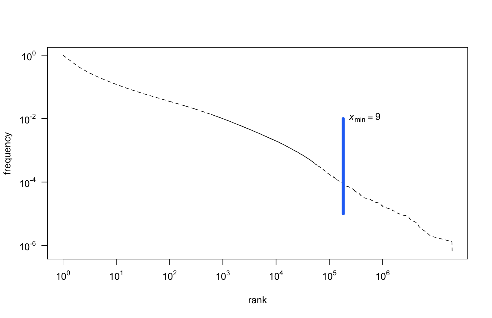

Zipf’s Law and Subsets of Lexis
Maciej Eder, Rafał L. Górski, Joanna Byszuk
Institute of Polish Language (Polish Academy of Sciences)

Qualico 2018, Wrocław, 5th July 2018
Zipf’s law and language
- It has been observed that the language is Zipfian.
- However, what is “the language”?
- orthographic forms or lemmata?
- only words or grammatical categories as well?
- unigrams or also n-grams?
Zipf’s Law on a log-log scale
Research question
- If the distribution of all the words in the corpus is Zipfian, is the distribution of a subset of these words also Zipfian?
- Since a text is a sum of nouns, verbs, adjectives, prepositions etc., is the distribution of particular classes (nouns, verbs etc.) also Zipfian?
Observations on Brown Corpus
[W]ord categories are also fit nicely […] perhaps even more closely than words—but the shape of the fit […] differs.
The general pattern suggests that a full explanation of the word frequency distribution would ideally call on mechanisms general enough to apply to syntactic categories and possibly even other levels of analysis.
(Piantadosi, 2014)
Dataset
- The balanced version of the National Corpus of Polish
- 300 mln segments, i.e. roughly 250 mln words.
- The POS tags and lemmata taken as they are.
- The corpus tagged automatically, using a 1 mln manually tagged subset.
- Consequently, some wrongly assigned tags should be expected!
Categories
- Very granular parts of speech in the National Corpus of Polish.
- e.g. subst:sg:nom:m1, adj:sg:nom:n:pos, etc.
- For that reason, we split the tags:
- the proper POS: subst, adj, fin, prep, …
- the number: sg, pl
- the case: nom, gen, dat, …
- the person: 1st, 2nd, 3rd (not included in a tag)
- Independently, we tested POS-tag n-grams
First observations: singular vs. plural

First observations: 1st, 2nd, 3rd person

First observations: cases

First observations: POS-tag ngrams

Modeling a power law distribution
- Since linear regression is simple to apply:
- Maybe it could be applied to a log-transformed dataset?
Linear regression on log-log data
If in so doing one discovers a distribution that approximately falls on a straight line, then one can, if one is feeling particularly bold, assert that the distribution follows a power law, with a scaling parameter α given by the absolute slope of the straight line.
(Clauset et al., 2009)
Fitting a power law
- Maximum likelihood estimators (MLEs) for continuous datasets
\[ \alpha = 1 + n \Big[ \sum_{i=1}^{n} \ln \frac{x_i}{x_{min}} \Big] ^{-1} \]
- MLEs for discrete datasets:
\[ \alpha \simeq 1 + n \Big[ \sum_{i=1}^{n} \ln \frac{x_i}{x_{min} - \frac{1}{2}} \Big] ^{-1} \]
- \(x_{min}\) is estimated using the Kolmogorov-Smirnov (KS) statistic:
\[ D = \max_{x \geq x_{min}} | S(x) - P(x) | \]
Fitted parameters: \(x_{min}\) (cutoff)

Fitted parameters: \(\alpha\) (scaling)

Results
- We fitted power law parameters for different categories:
- grammatical classes (parts of speech)
- inflection categories (cases, persons, numbers)
- POS-tags combined in 2-grams, 3-grams, …, 8-grams
- We compared \(\alpha\) (scaling) of the estimated models
- We compared the proportion of observations above \(x_{min}\)
What is perfectly Zipfian?
Prepositions and conjuctions:
| prep |
28,787,398 |
1.14 |
97.9% |
99.99% |
| conj |
10,455,657 |
1.21 |
81.03% |
99.99% |
| comp |
4,145,149 |
1.2 |
87.23% |
99.99% |
- Short, closed classes
- Non-Zipfian elements include archaic vocabulary, present but underrepresented in relation to the whole corpus.
What is least Zipfian?
Participles:
| praet |
11,995,036 |
1.97 |
5.12% |
81.23% |
| pant |
35,235 |
2.05 |
14.54% |
79.09% |
| ppas |
3,187,531 |
2.24 |
4.62% |
68.1% |
| pact |
1,209,948 |
2.25 |
3.5% |
65.32% |
| pcon |
662,548 |
2.3 |
4.5% |
64.38% |
- Why? They’re very productive!
Major parts of speech
- Subject and verb:
- Tokens - over 99% and 95% respectively
- Types - both only 17%
- Adjectives and adverbs:
- Tokens - 94% and 98%
- Types - 10% and 18%
- These are also very productive categories!
Cases
Stable, (un)expected Zipf results for both types and tokens:
| acc |
98% |
18% |
| voc |
95.5% |
10% |
| dat |
93% |
7% |
| loc |
91% |
3.5% |
| gen |
88% |
7% |
| inst |
75% |
2.5% |
| nom |
65% |
2.5% |
Relation between \(\alpha\) (scaling) and coverage?
- Is there any relation between the parameter \(\alpha\) (or slope of the model) and the number of observations above the \(x_{min}\) cutoff point?
- To address it, we modeled:
- the relation between \(\alpha\) and the proportion of tokens \(\geq x_{min}\)
- the relation between \(\alpha\) and the proportion of types \(\geq x_{min}\)
Parameter \(\alpha\) vs. \(\sqrt{\%}\) of Zipfian tokens
Parameter \(\alpha\) vs. \(\%\) of Zipfian types
Conclusions
- Unzipped language categories do not necessarily follow a power law distribution.
- Productivity of a class seems to be responsible for a heavy tail.
- Classes of relatively low productivity (voc, praep) do follow Zipf’s law.
- The relation between \(\alpha\) (the scaling parameter) and the proportion of a class following Zipf’s distribution worth further exploration.
Thank you!
This research is part of project UMO-2013/11/B/HS2/02795, supported by Poland’s National Science Centre.